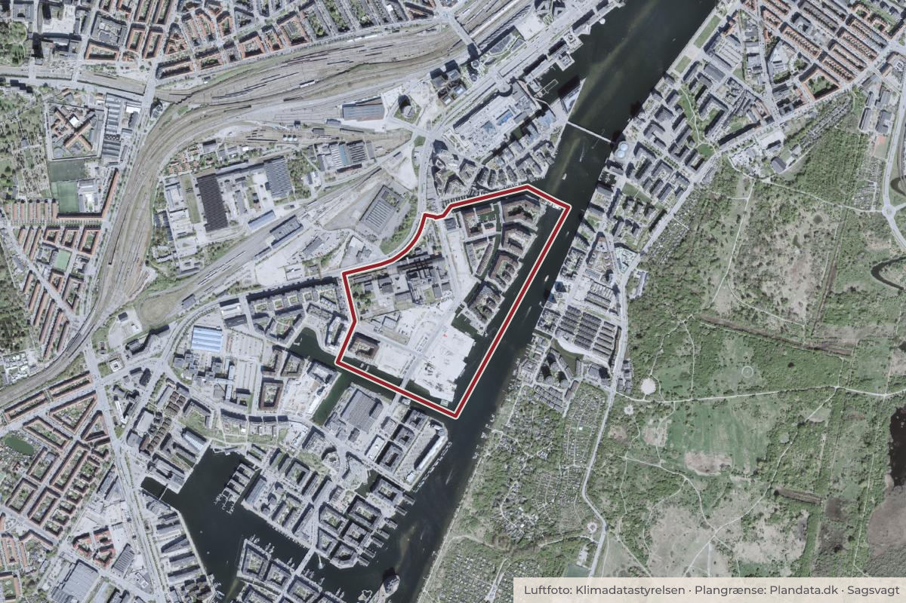

Behandlet 20. oktober, Vesterbro Lokaludvalg
Orientering om to dispensationssager vedr. ”Ankerbryggen” og "Lanternebryggen" til lokalplan nr. 494 ”Enghave Brygge”

Kort: © OpenStreetMap-bidragydere. Plangrænse: Plandata.dk, København Kommune.

Kort fortalt
- Forslaget
- Vesterbro Lokaludvalg tager orienteringen om naboorienteringerne og de afgivne høringssvar til efterretning.
- Hvem
- Vesterbro Lokaludvalg
- Hvornår
- Tirsdag 20. oktober 2026
- Status
- Behandlet. Referatet med beslutningen er ikke offentliggjort endnu.
Er noget forkert her? Skriv til os
Læs hele sagen Kommunens egen tekst
Indstilling
Forpersonen foreslår
• at Vesterbro Lokaludvalg tager orienteringen om naboorienteringerne og de afgivne høringssvar til efterretning.
Problemstilling
Klima-, Miljø- og Teknikforvaltningen har sendt to naboorienteringer om to dispensationssager fra lokalplan nr. 494 Enghave Brygge vedrørende henholdsvis
• udbygning af boligøen ”Ankerbryggen” (byggefelt K) på adressen Albert Lutulis Vej 1-25, der drejer sig om etablering af en ny boligetageejendom i 5-8 etager og indretning af de ubebyggede arealer.
• opførelse af boligbyggeri i 5-8 etager med 282 boliger på den sydligste boligø ”Lanternebryggen” (byggefelt L) på Garcia Robles Vej.
Materialet til begge sager kan findes på medlemmernes side under "Bilag og dokumenter".
Begge projekter kræver dispensation fra en række bestemmelser i lokalplan nr. 494 "Enghave Brygge". Dispensationerne vedrører blandt andet veje og broer, terrænkoter, træbrygger og pontoner, bebyggelsesplan, kote til udregning af højde, husdybde, bebyggelsens højde, altandybde, træer langs Enghave Kanal, promenadeforløb og tilgængelighed.
Dispensationssagerne er blevet sendt ud på lokaludvalgets mailliste for Teknik, trafik, bolig og byudvikling, der har udarbejdet bemærkningerne. Derudover er der tilføjet de overordnet bemærkninger fra lokaludvalgets høringssvar til naboorienteringen vedrørende boligbyggeri på Sejlbryggen (byggefelt J) på Enghave Brygge (godkendt den 17. juni 2026) med fokus på de kvaliteter, som lokaludvalget generelt ønsker fremmet i byudviklingen på Vesterbro.
Det gælder for begge sager, at der var frist for at komme med bemærkninger før lokaludvalgsmødet den 20. oktober 2026, henholdsvis den 14. og den 16. oktober 2026, og derfor har forpersonen godkendt lokaludvalgets høringssvar, inden de er blevet indsendt.
Løsning
Der er indsendt følgende bemærkninger til begge dispensationssager:
Vesterbro Lokaludvalg har uden for ordinært møde forholdt sig til dispensationsmaterialet, da der ikke ligger et lokaludvalgsmøde i høringsperioden. Lokaludvalget har følgende kommentarer til naboorienteringen vedrørende Ankerbryggen (byggefelt K) på Enghave Brygge:
Den fastlagte træbeplantning langs Enghave Kanal bør ikke alene betragtes som en teknisk beplantningsbestemmelse. Trærækken indgår som et centralt arkitektonisk og landskabeligt element i lokalplanens udformning af Enghave Kanal. Lokalplanens redegørelse beskriver kanalen som lokalplanområdets samlende element og anfører udtrykkeligt, at forløbet bindes sammen af en lang trærække, promenade og træbrygger langs kanalens østside.
Dette princip er konkretiseret i lokalplanens § 8, stk. 6, hvor det fastsættes, at kanalen skal anlægges med en trærække langs siderne, og at træerne skal plantes med 8–10 meters mellemrum samt være store træarter med store trækroner.
En væsentlig forøgelse af planteafstanden vil derfor ikke alene reducere antallet af træer, men ændre trærækkens rytme, kontinuitet og visuelle virkning. Dermed risikerer Enghave Kanal ikke længere at fremstå med den sammenhængende grønne struktur, som lokalplanen udtrykkeligt anvender.
En eventuel dispensation bør derfor vurderes i forhold til ikke alene den konkrete afstandsbestemmelse på 8–10 meter, men også lokalplanens overordnede princip om Enghave Kanal som et sammenhængende byrumsforløb karakteriseret af den lange trærække.
Lokaludvalget finder det desuden væsentligt, at den videre projektering og realisering fortsat understøtter intentionerne i lokalplanen om høj arkitektonisk kvalitet, attraktive og grønne opholdsarealer, gode forbindelser til vandet, biodiversitet samt gode rammer for hverdagsliv og naboskab.
Lokaludvalget lægger desuden vægt på, at projektet bidrager positivt til den samlede bykvalitet på Enghave Brygge og understøtter et levende og attraktivt havne- og boligmiljø.
Økonomi
Indstillingen har ingen økonomiske konsekvenser for Vesterbro Lokaludvalg.
Kilde: Københavns Kommune, Vesterbro Lokaludvalg, referat fra mødet tirsdag 20. oktober 2026, punkt 24. Læs den originale sag hos kommunen.